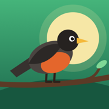

Birdex
Collect the birds you see. Log every sighting and watch it come alive in your own aviary. For iPhone and Android.
Support
Found a bug, have a question or an idea? Email hadar47@gmail.com and tell us what happened and which phone and system version (iOS or Android) you are using.
Common questions
Do I need an account? No. Birdex works without an account and fully offline.
Where is my collection saved? Only on your phone. Deleting the app deletes your collection, so keep that in mind before removing it.
How do I start over? Open Profile, then Settings, and tap "Delete all sightings".
How do I turn off the sounds? Tap the speaker button on the Home aviary.
Where do the bird names come from? From AviList: The Global Avian Checklist (CC BY 4.0). Full credits are in Profile, under Credits & data sources.